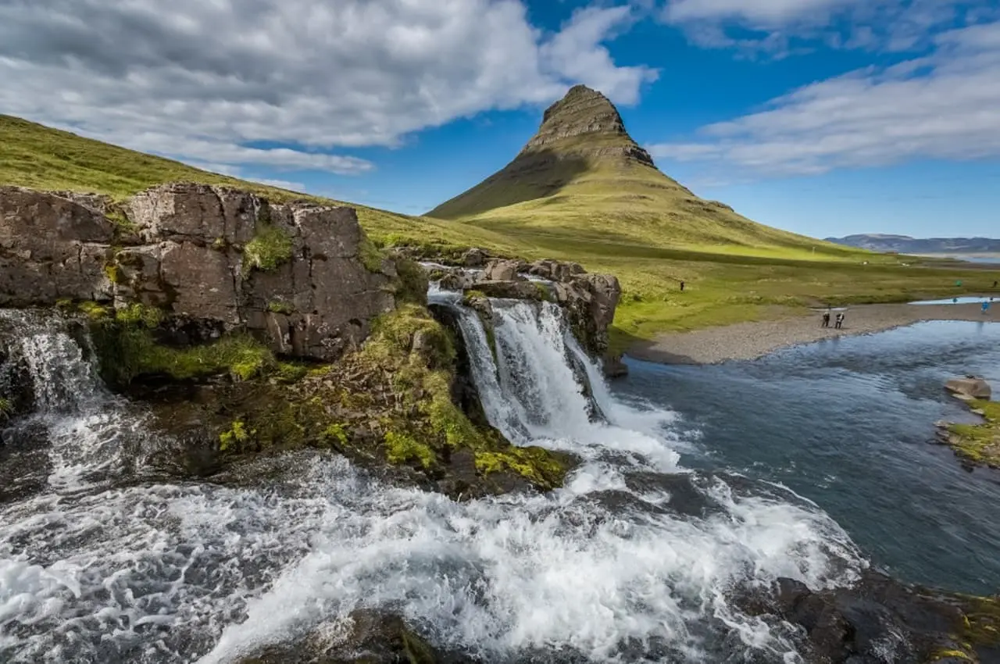
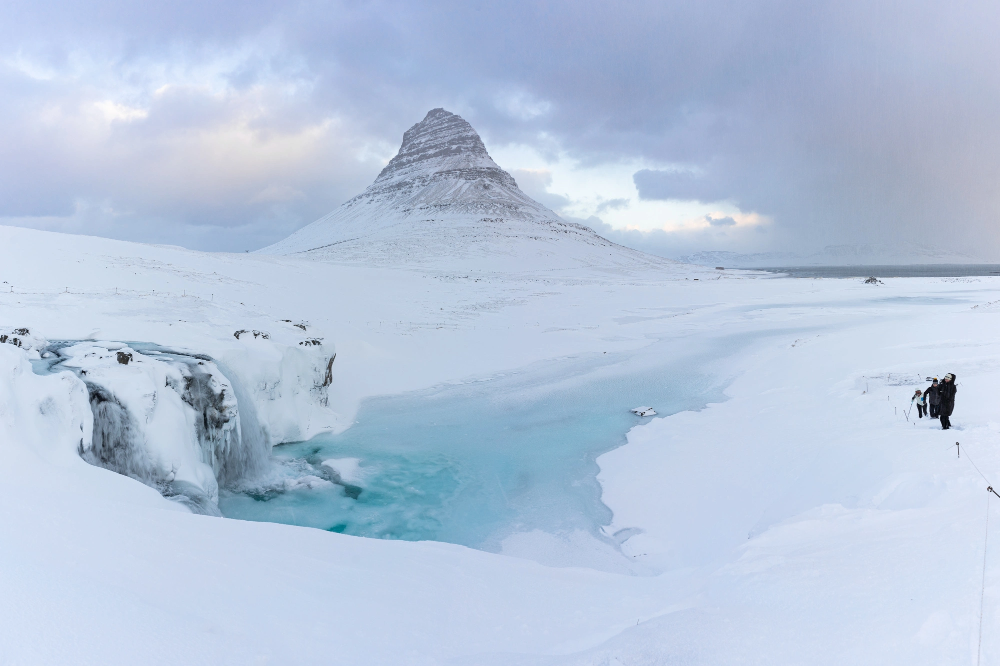
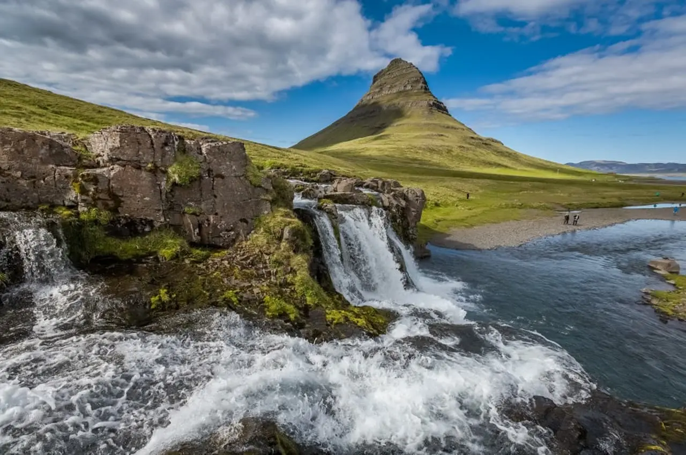
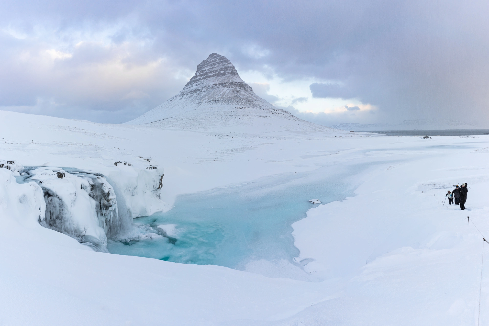

Kirkjufell
Kirkjufell, is a 463 m high hill on the north coast of Iceland's Snæfellsnes peninsula, near the town of Grundarfjörður. It is claimed to be the most photographed mountain in the country. Kirkjufell was one of the filming locations for Game of Thrones season 6 and 7, featuring as the "arrowhead mountain" that the Hound and the company north of the Wall see when capturing a wight.
Activities:
- Kirkjufellsfoss
- Statue “Sýn" by Steinunn Þórarinsdóttir
- Orca Sculpture